There are some places in Greece that you visit, enjoy, take a few photographs and move on. And then there are places that quietly work their way into your affections, leaving you wondering why you didn't stay a little longer. Stoupa, Agios Nikolaos and Kardamyli are firmly in the latter category.
Situated along the beautiful coastline of the Messinian Mani in the southern Peloponnese, these three villages are only a short drive from one another, but each has its own character. From the sandy beaches and turquoise water of Stoupa to the traditional fishing harbour of Agios Nikolaos and the rather stylish, stone-built streets of Kardamyli, there's plenty to enjoy.
We didn't stay in any of the three, visiting them during our time exploring the Mani Peninsula, but all three left us thinking much the same thing:
we could quite happily spend a few days here.
STOUPA – SANDY BEACHES, TURQUOISE WATER AND A LITTLE BIT OF ZORBA
Stoupa is one of those places that seems to have got the balance just right. Set beneath the impressive Taygetos Mountains, this attractive seaside village has a lovely long sandy beach, a waterfront lined with tavernas and cafés, and enough holiday atmosphere to make you feel you've arrived somewhere special without it becoming too overwhelming.
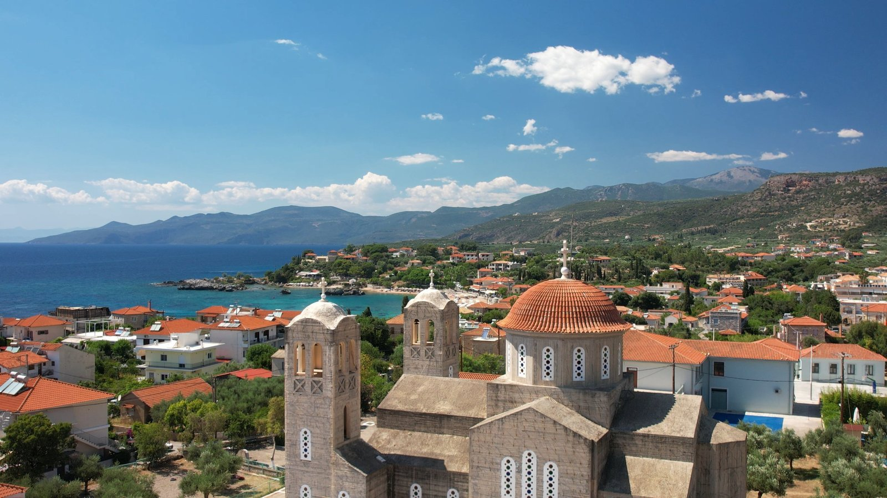
We didn't stay in Stoupa, but visited several times from our base in Oitylo. It was about a 45-minute drive through the mountains, and although the roads were a little winding, the scenery made the journey well worthwhile.
The beaches
The main beach is fabulous. Golden sand, wonderfully clear turquoise water and a gentle shallow entrance make it particularly appealing for families with children. It's quite different from some of the rocky and pebbly beaches you'll find elsewhere in the Mani.
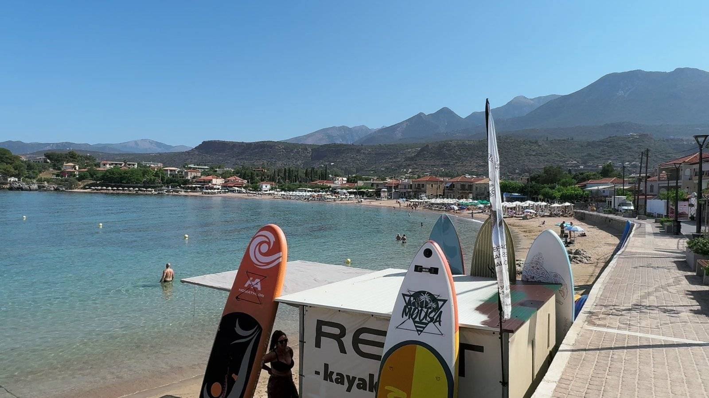
There are actually two lovely sandy bays here: Stoupa Beach and neighbouring Kalogria Beach, separated by a small headland. Both are popular swimming spots, and Kalogria is particularly famous for its beautiful pale sand and exceptionally clear water, although it can be chilly, as cold water springs bubble up into this bay.
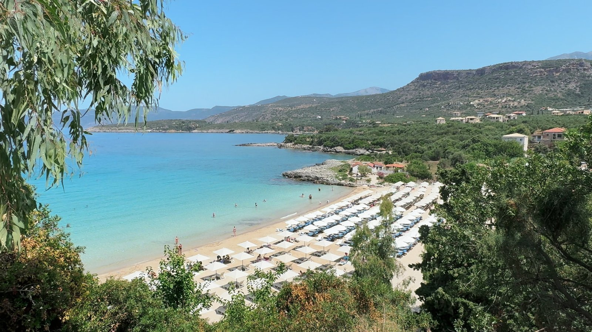
Patriko and the waterfront
The waterfront is where much of the action happens. Cafés, bars and traditional tavernas sit practically on the sand, so you're never far from somewhere to escape the heat, grab a cold drink or enjoy a leisurely lunch.
Our particular favourite beachfront café is the Patriko café bar, where we regularly stopped for a beer, sangria and a club sandwich. Not exactly traditional Greek cuisine, but very tasty all the same.
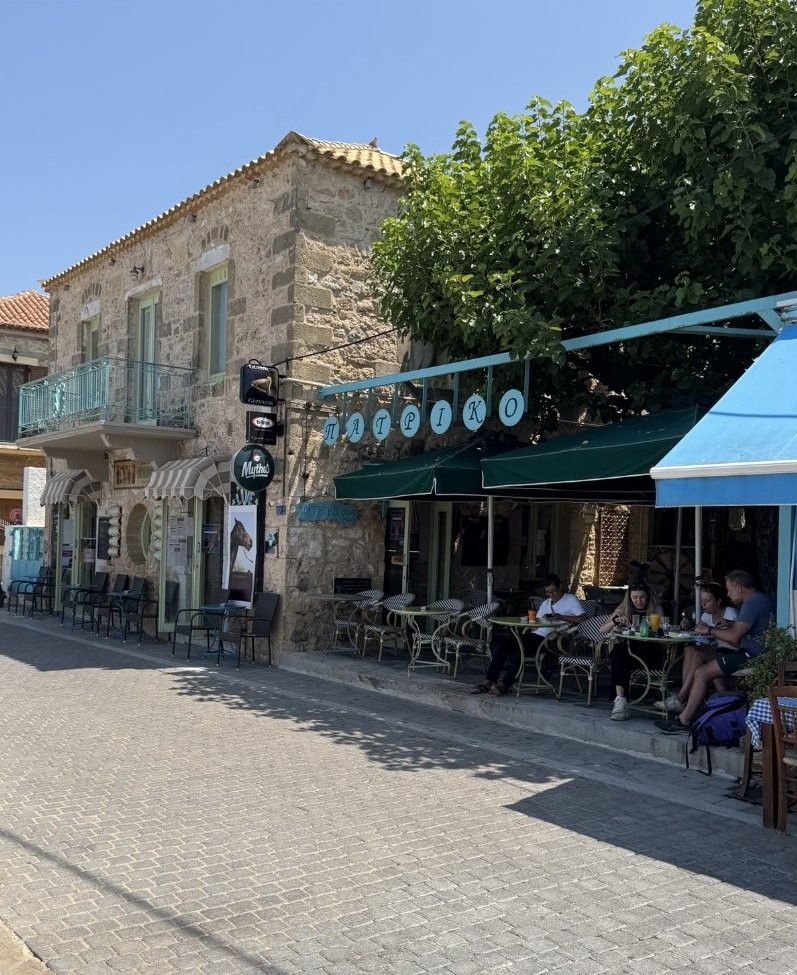
Sometimes you just have to give the Greek salad a day off!
There are sunbeds and beach umbrellas available, although they aren't necessarily free. Some establishments include their use when you purchase food or drinks, so it's worth checking before settling in. There are also plenty of stretches of beach where you can simply put down your own towel and bring your own umbrella.
And believe me, you'll appreciate some shade. The Greek sunshine can be relentless, particularly in the middle of summer. You can either bring your own beach umbrella or do what we often did and retreat to one of the waterfront bars until the worst of the midday heat has passed.
If you're feeling a little more energetic, there are water sports available, including paddleboarding, which is always tempting when the sea looks that inviting.
Zorba the Greek
Stoupa also has an interesting literary connection. In 1917, Greek writer Nikos Kazantzakis arrived in the area to establish a lignite mining business. He met George Zorbas, who worked alongside him and later became the inspiration for the character of Alexis Zorba in the famous novel Zorba the Greek. A bust of Kazantzakis overlooks Kalogria Beach, commemorating the connection.
It's a rather lovely bit of history to discover while enjoying a beach that is otherwise likely to distract you completely.
AGIOS NIKOLAOS – A PROPER LITTLE GREEK FISHING VILLAGE
Just four kilometres south of Stoupa is Agios Nikolaos, a charming little fishing village with a much more traditional and laid-back feel.
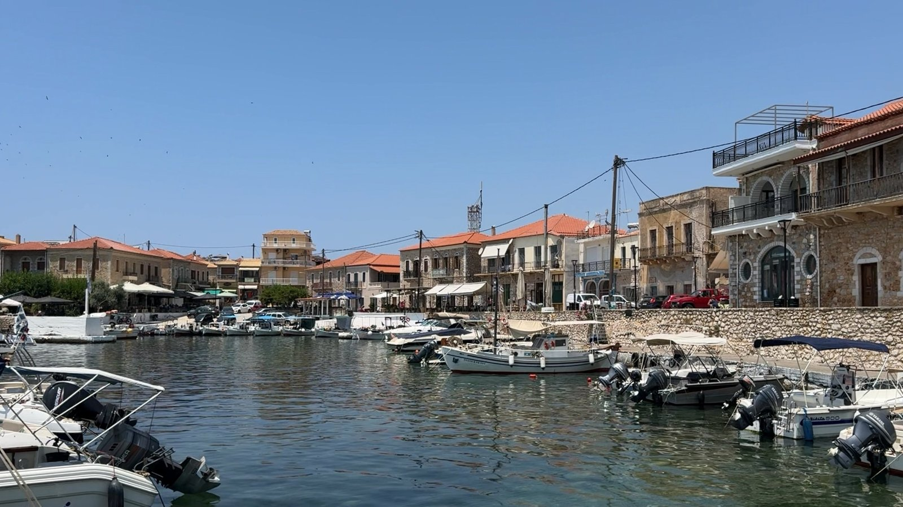
It's the sort of place where you can imagine life ticking along at a slightly slower pace. The harbour is the focal point, with fishing boats bobbing in the water, stone buildings surrounding the waterfront and a collection of cafés, bars and tavernas lining the narrow streets.
We called in after visiting Stoupa and immediately liked the atmosphere. It felt quieter and more traditional, with none of the need to rush around ticking off sightseeing attractions.
We headed into the shade of a lovely bar called Niriides, found ourselves a table and settled down to watch Greek life unfold around us.
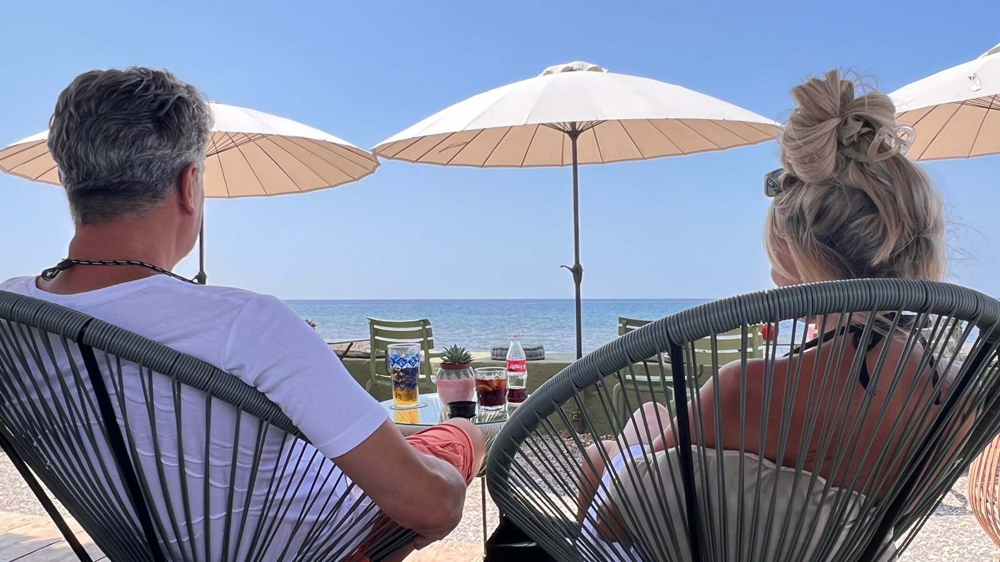
And that's really the appeal of Agios Nikolaos. Find a table in the shade, order something to eat, pour yourself a glass of wine and simply enjoy the moment. There's no great sightseeing agenda required.
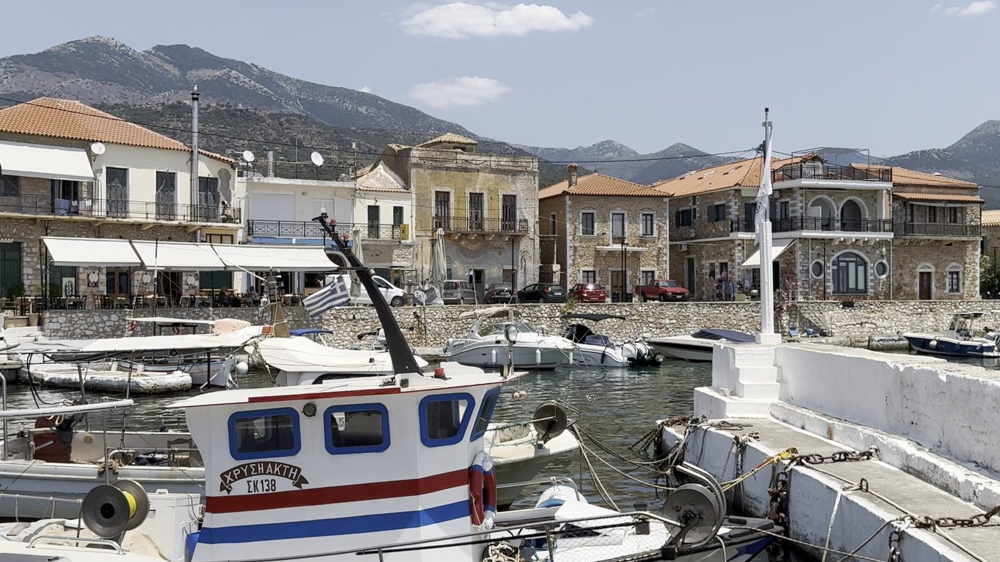
The village has a history as a small fishing and trading settlement and was formerly known as Selinitsa. Its traditional character is still very much part of its appeal, and the harbour remains central to village life.
If you enjoy seafood, this is a good place to seek out a traditional taverna. Fresh fish and local dishes feature on menus, including lalangia, a traditional Messinian fried dough speciality.
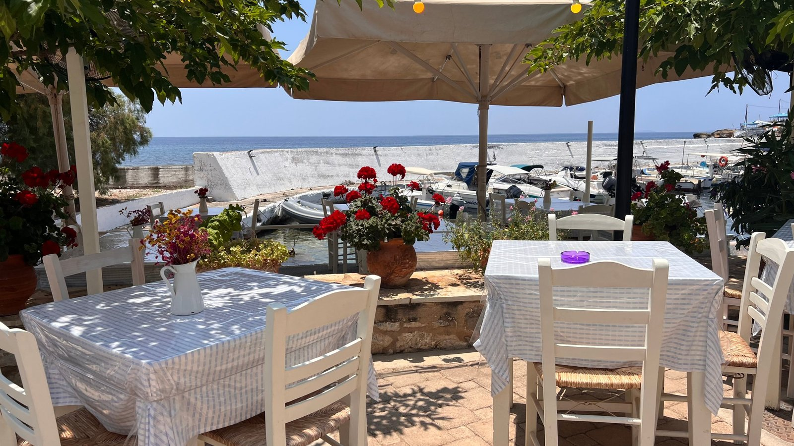
There are also some lovely beaches nearby. Pantazi Beach, just south of the village, is a sandy and pebbly stretch backed by trees, while the little coves around the coastline are worth exploring if you fancy finding somewhere quieter for a swim.
For anyone who enjoys walking, the coastal route towards Stoupa provides a lovely way to explore this stretch of the Mani, with sea views and plenty of opportunities to stop along the way.
Agios Nikolaos isn't somewhere I'd necessarily visit for a packed day of sightseeing. It's somewhere I'd go to enjoy a leisurely lunch, have a wander around the harbour and remind myself that sometimes doing very little is actually doing quite a lot.
KARDAMYLI – BEAUTIFUL BUILDINGS, BOUTIQUE SHOPS AND A LOVELY SEASIDE CAFÉ
Of the three, Kardamyli probably has the most distinctive character. It's a particularly attractive coastal village, with traditional stone buildings, historic tower houses, pretty streets and a rather sophisticated feel.
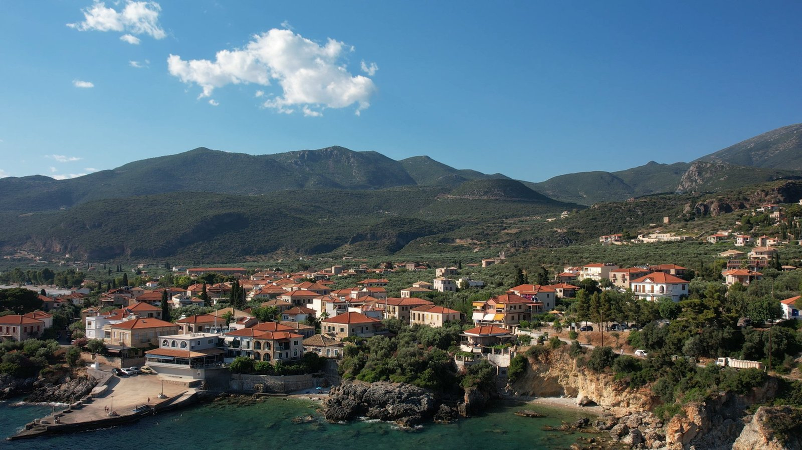
Situated beneath the Taygetos Mountains, overlooking the Messinian Gulf, Kardamyli has a fascinating history stretching back to ancient Greece. It is even mentioned in Homer's Iliad, where it appears among the seven cities offered by Agamemnon to Achilles.
Unlike Stoupa, which has developed around its beaches and summer visitors, Kardamyli feels a little more understated and elegant. There are beautiful old buildings, independent boutiques, galleries and lovely places to eat, all tucked into a setting that seems almost impossibly picturesque.
We didn't stay here either, but stopped during our road trip to have a look around.
And what a lovely place it is.
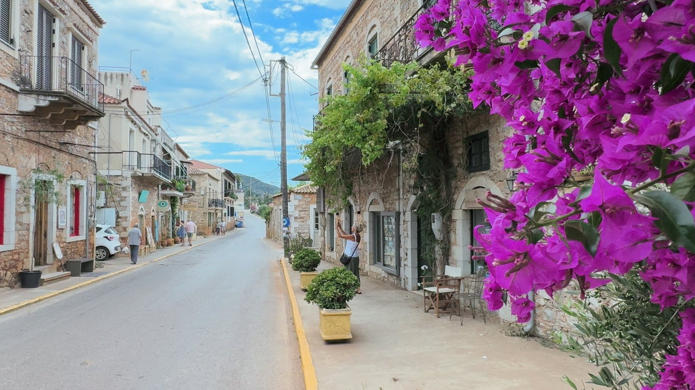
The buildings are beautiful, with traditional stone architecture and some impressive old tower houses reflecting the distinctive style of the Mani. These fortified homes were once built by powerful local families, and their solid stone construction gives the village a character quite different from many other Greek coastal resorts.
Shopping and a little red Mini
There are plenty of upmarket boutiques selling high-end goods, and Jacquie was very much in her element wandering in and out of the shops. I suspect she could have spent considerably longer there than I had originally budgeted for.
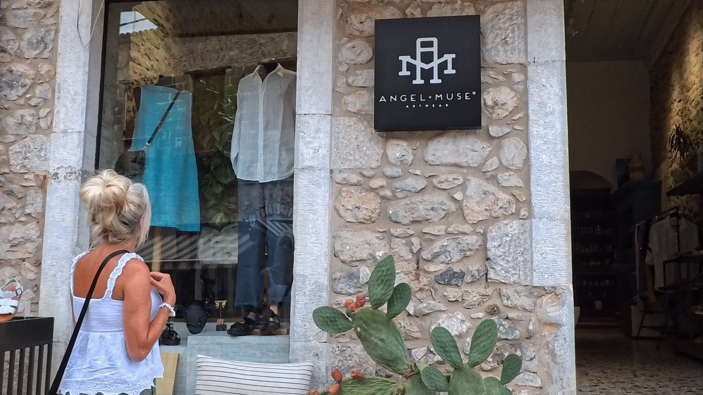
I, meanwhile, spotted a rather funky little red Mini parked outside one of the houses. It looked absolutely perfect, and I did briefly consider whether we could negotiate a straight swap for our hire car. I'm not sure the hire company would have been quite so enthusiastic about the idea.
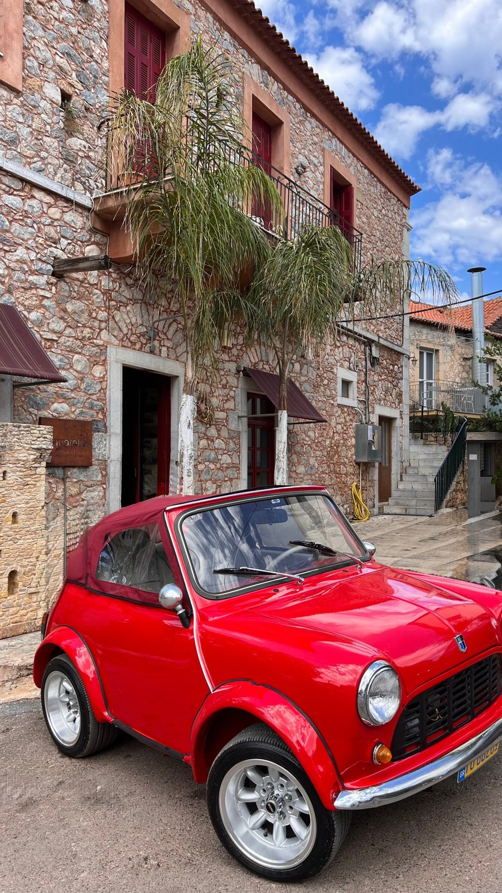
Breakfast by the sea
One of the highlights of our visit was finding the most perfect little café for breakfast, overlooking the sea. We settled ourselves down, enjoyed the view and spent a couple of hours doing very little at all.
It's moments like these that make a place memorable. No complicated itinerary, no rushing around, just a lovely setting, something to eat and a view you could happily stare at all morning.
Old Kardamyli and Patrick Leigh Fermor
Kardamyli also has some interesting places to explore beyond its shops and cafés. Old Kardamyli, known as Palia Kardamyli, is particularly worth a visit. Here you'll find traditional fortified buildings, the Troupakis-Mourtzinos tower complex and the beautiful Church of Agios Spyridon, dating from the 18th century.
Another notable connection is the former home of British travel writer Patrick Leigh Fermor and his wife Joan. They fell in love with the Mani and built their beautiful stone house in nearby Kalamitsi during the 1960s. The property was later donated to the Benaki Museum and now operates as a cultural and educational centre, with scheduled public visits.
For anyone interested in Greek history, architecture or literature, it's a fascinating place to discover.
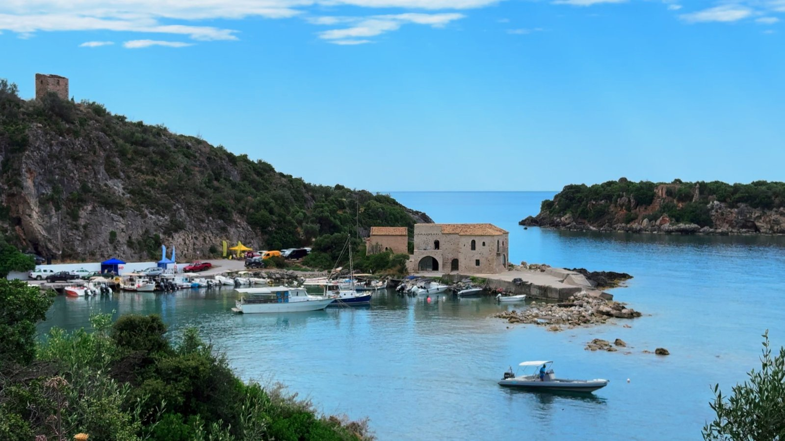
And if you're more interested in beaches than buildings, Kardamyli has those covered too. Ritsa Beach is the main beach, while Kalamitsi and Foneas offer beautiful coastal alternatives. Foneas, in particular, is famous for its dramatic rocky setting and wonderfully clear water.
There are also some excellent walking routes in the surrounding countryside, including the impressive Viros Gorge, making Kardamyli a good base for anyone who likes combining a little exploring with some time beside the sea.
BEST THINGS TO SEE AND DO AROUND STOUPA, AGIOS NIKOLAOS AND KARDAMYLI
If you're visiting this part of the Mani, it's easy to explore all three villages in a day, although I'd suggest allowing longer if you can. Here are some of the highlights:
- Stoupa Beach: Spend a lazy day on the golden sand, swimming in the clear turquoise water and enjoying the waterfront cafés and tavernas.
- Kalogria Beach: Visit the beautiful neighbouring bay, famous for its pale sand, shallow water and connection with Nikos Kazantzakis and Zorba the Greek.
- Agios Nikolaos Harbour: Wander around the fishing harbour, enjoy a leisurely lunch and soak up the traditional Greek atmosphere.
- Pantazi Beach: Head south of Agios Nikolaos for a quieter beach setting surrounded by trees.
- Old Kardamyli: Explore the historic stone buildings, fortified tower houses and Church of Agios Spyridon.
- Patrick Leigh Fermor House: Discover the former home of the famous British writer, subject to scheduled visits and advance booking.
- Ritsa and Foneas Beaches: Explore two beautiful stretches of coastline near Kardamyli.
- Viros Gorge: If you fancy something more energetic, explore the walking routes through this spectacular gorge beneath the Taygetos Mountains.
PRACTICAL TIPS FOR VISITING
- Getting there: Kalamata International Airport is the closest airport, approximately 45–50 km from Stoupa and around 35–40 km from Kardamyli. A hire car is the easiest way to explore the area, particularly if you want to visit the smaller villages and beaches. Read our car hire tips, then compare prices on DiscoverCars, before you book.
- Getting around: Stoupa, Agios Nikolaos and Kardamyli are all close together. You can easily combine them into a day trip, although a few days would allow you to enjoy them at a much more leisurely pace.
- Best time to visit: May and June are lovely months, with warm weather and fewer visitors. September and early October are also excellent, particularly if you enjoy swimming in the sea without the height of the summer crowds.
- Where to stay: Stoupa is a good choice if you want a traditional beach holiday with plenty of restaurants and facilities. Agios Nikolaos is quieter and more traditional, while Kardamyli offers a little more boutique charm, with beautiful accommodation and independent shops.
OUR VERDICT – THREE LITTLE GEMS WORTH RETURNING TO
Would we go back to Stoupa, Agios Nikolaos and Kardamyli? Absolutely.
Although we didn't stay in any of them, all three captured our hearts for different reasons. Stoupa has that fabulous beach and everything you need for a relaxing seaside holiday. Agios Nikolaos has the charm of a traditional Greek fishing village, where a long lunch can easily turn into an afternoon. And Kardamyli has beautiful architecture, lovely shops and those little cafés where you could happily lose a few hours.
They're close enough to explore together, but different enough to make each visit feel special. If we were choosing somewhere to spend a few days in the Mani, all three would be firmly on the shortlist.
And if I had to choose just one? Well, that's a difficult question. Jacquie would probably say Kardamyli for the shopping, I'd say Stoupa for the beach, and we'd both agree that Agios Nikolaos is the perfect place to sit in the shade with a drink and watch the world go by.
Perhaps the answer is to stay a few days in each.
Now there's a plan!